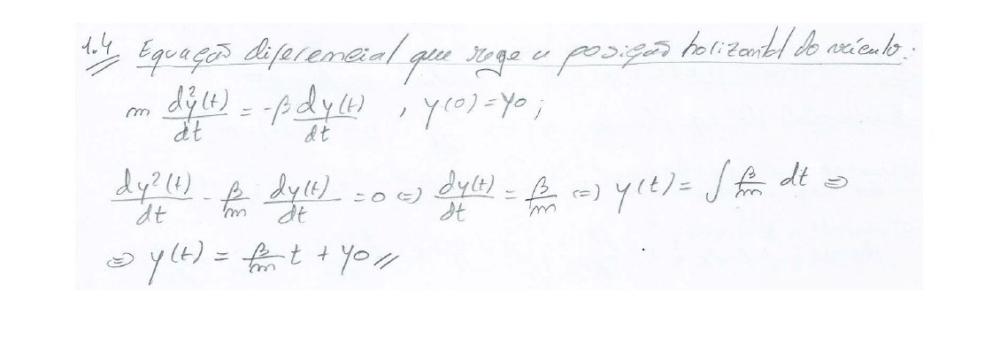
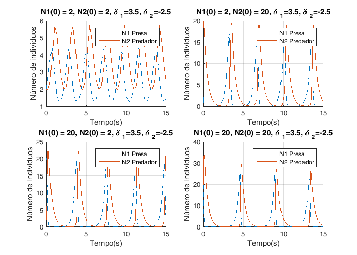
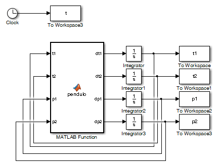

Trabalho de Laboratório - Simulação Básica em Matlab/Simulink
Autor: Diogo Vilar Sardinha
Contents
- Questão 1.1 - Modelo para simulação do movimento livre de uma viatura
- Questão 1.2 - Evolução qualitativa da velocidade no tempo
- Questão 1.3 - Equação diferencial
- Questão 1.4 - Equação diferencial que rege a posição do veículo
- Questão 1.5 - Simulação do movimento livre de uma viatura
- Questão 2.1 Modelo Predador-Presa
- Questões 2.2 e 2.3 - Simulações do Modelo Predador-Presa
- Questões 2.2 e 2.3 - Soluções de Equilíbrio
- Questões 2.2 e 2.3 - Soluções Oscilatórias
- Questões 2.2 e 2.3 - Soluções em que a Presa se extingue e o Predador mantem-se constante
- Questões 2.2 e 2.3 - Soluções em que a Presa e o Predador se extinguem
- Questões 2.2 e 2.3 - Soluções em que a Presa se extingue e o Predador cresce indefinidamente
- Questões 2.2 e 2.3 - Gráfico do espaço de fases N1 e N2 para direntes valores de N01 e N02
- Questão 2.4.a) Aproximação por tentativa e erro
- Questão 2.4.b) Ajuste de parametros por estimação do erro absoluto
- Questão 2.4.c) Obtenção dos parametros por calculo exacto do erro mínimo
- Questão 2.4.d) Validação do modelo por obtenção do erro mínimo
- Questão 3.1 Sistema Caótico
- Questão 3.2 Curva de Lissajous
- Questão 3.3 Soluções posíveis
- Questão 3.4 - Determinação do tempo que decorre até uma das barras “fazer um looping”%%
Questão 1.1 - Modelo para simulação do movimento livre de uma viatura
n=1; % inicialização do contador para as figuras figure(n) n=n+1;I = imread('./figures/1.1.jpg'); imshow(I);
Questão 1.2 - Evolução qualitativa da velocidade no tempo
figure(n)
n=n+1;
I = imread('./figures/1.2.jpg');
imshow(I);
Questão 1.3 - Equação diferencial
figure(n)
n=n+1;
I = imread('./figures/1.3.jpg');
imshow(I);

Questão 1.4 - Equação diferencial que rege a posição do veículo
figure(n)
n=n+1;
I = imread('./figures/1.4.jpg');
imshow(I);
 Questão 1.5 - Simulação do movimento livre de uma viatura
A equação diferencial mais o cálculo da posição  são representados pelo seguinte diagrama de Blocos no Simulink:
são representados pelo seguinte diagrama de Blocos no Simulink:
open_system('viatura')

Simulação de um movimento livre de uma viatura para diferentes valores de m, beta e V0
y0=5; v0=0; beta=5; m=0;
Gráficos de posição
figure(n) n=n+1; hold all; for m=[30 60 3] for v0=[3 -3] sim('viatura', 25) plot(t, y, 'DisplayName', ['m/beta=',num2str(m/beta),'s; v0=',num2str(v0),'m/s']) end end legend('show') title('Curvas da Posição do Veículo') ylabel('Posição') xlabel('Tempo(s)') grid on

Gráficos de Velocidade
figure(n) n=n+1; hold all; for m=[30 60 3] for v0=[3 -3] sim('viatura', 25) plot(t,v, 'DisplayName', ['m/beta=',num2str(m/beta),'s; v0=',num2str(v0),'m/s']) end end legend('show') title('Curvas da Velocidade do Veículo') ylabel('Velocidade') xlabel('Tempo(s)') grid on
Questão 2.1 Modelo Predador-Presa
figure(n) n=n+1; I = imread('./figures/2.1.1.jpg'); J = imresize(I, 0.7); imshow(J); figure(n) n=n+1; I = imread('./figures/2.1.2.jpg'); J = imresize(I, 0.7); imshow(J);


Questões 2.2 e 2.3 - Simulações do Modelo Predador-Presa
O sistema de equações:  é representado pelo seguinte diagrama Simulink:
é representado pelo seguinte diagrama Simulink:
open_system('predador_presa')

Considerando alpha1=alpha2=1, simula-se o sistema descrito pelo diagrama para diferentes valores das condições iniciais: N1(0), N2(0), delta 1 e delta 2:
alpha1=1; alpha2=1;
Questões 2.2 e 2.3 - Soluções de Equilíbrio
Neste caso constata-se que o numero de individuos de cada uma das populações mantem-se constante atravês da verificação das seguintes condiço~es:
figure(n) fig = figure(n); set(fig, 'Position', [0, 0, 700, 500]) % x, y, largura e comprimento da figura n=n+1; hold all; N10_aux=[2 10 50 100]; N20_aux=[2 10 50 100]; delta1_aux=[2 10 50 100]; delta2_aux=[-2 -10 -50 -100]; for k=1:4 N10 = N10_aux(k); N20 = N20_aux(k); delta1 = delta1_aux(k); delta2 = delta2_aux(k); sim('predador_presa',20) subplot(2,2,k) hold all; plot(t, N1,'--','DisplayName', 'N1 Presa') plot(t, N2, 'DisplayName', 'N2 Predador') title(['N1(0) = ',num2str(N10),', N2(0) = ',num2str(N20),', {\delta }_{1}=',num2str(delta1),', {\delta }_{2}=',num2str(delta2)]) ylabel('Número de indivíduos') xlabel('Tempo(s)') grid on legend('show') end

Questões 2.2 e 2.3 - Soluções Oscilatórias
As soluções oscilatórias verificam-se caso: Para além disto:
Soluções para delta1 = 1.5 e delta2 = -1.5
figure(n) fig = figure(n); set(fig, 'Position', [0, 0, 700, 500]) % x, y, largura e comprimento da figura n=n+1; hold all; delta1=1.5; delta2=-1.5; k=1; for N10=[2 20] for N20=[2 20] sim('predador_presa', 15) subplot(2,2,k) hold all; k=k+1; plot(t, N1,'--','DisplayName', 'N1 Presa') plot(t, N2, 'DisplayName', 'N2 Predador') title(['N1(0) = ',num2str(N10),', N2(0) = ',num2str(N20),', {\delta }_{1}=',num2str(delta1),', {\delta }_{2}=',num2str(delta2)]) ylabel('Número de indivíduos') xlabel('Tempo(s)') grid on legend('show') end end

Soluções para delta1 = 3.5 e delta2 = -2.5
figure(n) fig = figure(n); set(fig, 'Position', [0, 0, 700, 500]) % x, y, largura e comprimento da figura n=n+1; hold all; delta1=3.5; delta2=-2.5; k=1; for N10=[2 20] for N20=[2 20] sim('predador_presa', 15) subplot(2,2,k) hold all; k=k+1; plot(t, N1,'--','DisplayName', 'N1 Presa') plot(t, N2, 'DisplayName', 'N2 Predador') title(['N1(0) = ',num2str(N10),', N2(0) = ',num2str(N20),', {\delta }_{1}=',num2str(delta1),', {\delta }_{2}=',num2str(delta2)]) ylabel('Número de indivíduos') xlabel('Tempo(s)') grid on legend('show') end end
Questões 2.2 e 2.3 - Soluções em que a Presa se extingue e o Predador mantem-se constante
Dois conjuntos de condições iniciais que conduzem a evoluções identicas do sistema.
figure(n) fig = figure(n); set(fig, 'Position', [0, 0, 1000, 500]) % x, y, largura e comprimento da figura n=n+1; hold all; N10_aux=[10 50 10 50 10 50]; N20_aux=[10 50 10 50 10 50]; delta1_aux=[-1 -1 0 0 1 1]; delta2=0; tsim=2; for k=1:6 N10 = N10_aux(k); N20 = N20_aux(k); delta1 = delta1_aux(k); sim('predador_presa') subplot(3,2,k) hold all; plot(t, N1,'--','DisplayName', 'N1 Presa') plot(t, N2, 'DisplayName', 'N2 Predador') title(['N1(0) = ',num2str(N10),', N2(0) = ',num2str(N20),', {\delta }_{1}=',num2str(delta1),', {\delta }_{2}=',num2str(delta2)]) ylabel('Número de indivíduos') xlabel('Tempo(s)') grid on legend('show') end

Questões 2.2 e 2.3 - Soluções em que a Presa e o Predador se extinguem
Soluções para delta1 = 3.5 e delta2 = -2.5
figure(n) fig = figure(n); set(fig, 'Position', [0, 0, 700, 500]) % x, y, largura e comprimento da figura n=n+1; hold all; delta1=0; delta2=-1.5; k=1; for N10=[2 20] for N20=[2 20] sim('predador_presa',30) subplot(2,2,k) hold all; k=k+1; plot(t, N1,'--','DisplayName', 'N1 Presa') plot(t, N2, 'DisplayName', 'N2 Predador') title(['N1(0) = ',num2str(N10),', N2(0) = ',num2str(N20),', {\delta }_{1}=',num2str(delta1),', {\delta }_{2}=',num2str(delta2)]) ylabel('Número de indivíduos') xlabel('Tempo(s)') grid on legend('show') end end

Questões 2.2 e 2.3 - Soluções em que a Presa se extingue e o Predador cresce indefinidamente
Soluções para delta1 = 3.5 e delta2 = -2.5
figure(n) fig = figure(n); set(fig, 'Position', [0, 0, 700, 500]) % x, y, largura e comprimento da figura n=n+1; hold all; delta1=0; delta2=1; k=1; tsim=0.5; for N10=[2 20] for N20=[2 20] sim('predador_presa') subplot(2,2,k) hold all; k=k+1; plot(t, N1,'--','DisplayName', 'N1 Presa') plot(t, N2, 'DisplayName', 'N2 Predador') title(['N1(0) = ',num2str(N10),', N2(0) = ',num2str(N20),', {\delta }_{1}=',num2str(delta1),', {\delta }_{2}=',num2str(delta2)]) ylabel('Número de indivíduos') xlabel('Tempo(s)') grid on legend('show') end end
Questões 2.2 e 2.3 - Gráfico do espaço de fases N1 e N2 para direntes valores de N01 e N02
delta1 =5; delta2 =-5; tsim = 5; figure(n) n=n+1; hold all; for N10 = [20 2] for N20 = [15 4] sim('predador_presa'); factor=N10/N20; plot(N1, N2,'DisplayName',['N1(0)/N2(0) = ', num2str(factor)]) end end xlabel('Número de Presas (N1)') ylabel('Número de Predadores (N2)') title('Gráfico em espaço de fase (N1,N2)') legend('show')
Questão 2.4.a) Aproximação por tentativa e erro
Simulando o sistema para diferentes valores das características N2(0) e dos predadores, obteve-se, por tentativa e erro, uma evoluçõão temporal do número de presas aproximada à curva fornecida.
load('presas.mat') % carregamento do ficheiro presas.mat que contem valores para uma populacao % de presas ao longo do tempo delta1=3.1; alpha1=1.4; delta2=-1.5; N10=4; figure(n) fig = figure(n); set(fig, 'Position', [0, 0, 700, 500]) % x, y, largura e comprimento da figura n=n+1; hold all; alpha2_aux=[0.7 0.7]; N20_aux=[1.6 1.6]; hold all; plot(tr, yr, 'DisplayName', 'Presas(N1) (dados)') for k=1:1 N20 = N20_aux(k); alpha2 = alpha2_aux(k); sim('predador_presa',tr) plot(tr, N1,'--','DisplayName',['Presas(N1) (simulação), {\alpha }_{2}=',num2str(alpha2),', N2(0) = ',num2str(N20)]) end XMIN=0; XMAX=20; YMIN=0; YMAX=6; axis ([XMIN XMAX YMIN YMAX]); legend('show') title('Aproximação dos dados recolhidos por simulação') ylabel('Número de indivíduos N1(t) ') xlabel('Tempo(s)') grid on
foi obtida por tentativa e erro a Seguinte aproximação:
N2(0)= 1.6 e = 0.7
Questão 2.4.b) Ajuste de parametros por estimação do erro absoluto
De forma a obter uma estimativa dos valores de N2(0) e da população de predadores começa-se por fazer um varrimento de possíveis valores destes parâmetros e, para cada par de valores, estimar o erro absoluto ou soma dos valores absolutos das diferenças entre os valores fornecidos e os calculados. Os valores são escolhidos tendo em conta que, na alínea anterior, foi obtida uma aproximação aos valores de N2(0) e por tentativa e erro. Na alínea anterior foram obtidos dois pares de valores: N2(0)= 1.6 e =0.7
p=15; % numero de valores de N0 e alpha a testar erros = zeros(p, p); % icialização da matriz com os valores de erro N20_min=1.4; N20_max=1.8; alpha2_min=0.5; alpha2_max=0.9;
Pelas aproximacoes feitas na alinea 2.4a) sabemos que valores de e N2(0) estão dentro destes parametros, e os intervalos foram escolhidos de modo a haver coerencia entre os dados fornecidos pelo ficheiro presas.mat
N20_aux=linspace(N20_min,N20_max,p); % N2(0) -> espaço linear, vector de p pontos entre N20_min e N20_max alpha2_aux=linspace(alpha2_min,alpha2_max,p); % alpha2 -> espaço linear, vector de p pontos entre alpha2_min e alpha2_max h = waitbar(0, 'A calcular erros... Está quase...'); set(h,'HandleVisibility','off') for i=1:p for j=1:p alpha2 = alpha2_aux(i); N20 = N20_aux(j); % erros(i,j)=erro([N20_aux(j) alpha2_aux(i)]); erros(i,j)=erro([N20 alpha2]); end delete(h); h = waitbar(i/p, 'A calcular erros... Está quase...'); % barra de loading a apresentar durante simulação end delete(h); figure(n) fig = figure(n); set(fig, 'Position', [0, 0, 700, 500]) % x, y, largura e comprimento da figura n=n+1; subplot(2,1,1) surfc(alpha2_aux,N20_aux,erros); xlabel('{\alpha }_{2}'); ylabel('N2(0)'); zlabel('Erro'); colorbar; title('Superfície de Erro') subplot(2,1,2) contour(alpha2_aux,N20_aux,erros,100);% 100 linhas de contorno xlabel('{\alpha }_{2}'); ylabel('N2(0)'); colorbar; title('Curvas de nível')

Os valores de e N2(0) não são facilmente estimados pela observação dos gráficos anteriores, sendo apenas possível estimar um intervalo de valores. A precisão da estimação depende do número (p) de valores a testar e do intervalo entre o valor mínimo e o máximo. Os intervalos de valores para e N2(0) foram escolhidos obsevando a surferficie de erro obtida vista de cima e analisando dentro da curva mais estreita do grafico contour, obtendo-se:
N2(0)= [1.586 , 1.614] e = [0.614 , 0.74]
Com base neste intervalaos vamos estimar de novo intervalos de valores mais precisos
N20_min=1.586; N20_max=1.614; alpha2_min=0.674; alpha2_max=0.74; N20_aux=linspace(N20_min,N20_max,p); alpha2_aux=linspace(alpha2_min,alpha2_max,p); h = waitbar(0, 'A calcular erros... Está quase...'); set(h,'HandleVisibility','off') for i=1:p for j=1:p alpha2 = alpha2_aux(i); N20 = N20_aux(j); erros(i,j)=erro([N20 alpha2]); end delete(h); h = waitbar(i/p, 'A calcular erros... Está quase...'); end delete(h); figure(n) fig = figure(n); set(fig, 'Position', [0, 0, 700, 500]) % x, y, largura e comprimento da figura n=n+1; subplot(2,1,1) surfc(alpha2_aux,N20_aux,erros); xlabel('{\alpha }_{2}'); ylabel('N2(0)'); zlabel('Erro'); colorbar; title('Superfície de Erro') subplot(2,1,2) contour(alpha2_aux,N20_aux,erros,100);% 100 linhas de contorno xlabel('{\alpha }_{2}'); ylabel('N2(0)'); colorbar; title('Curvas de nível')

Pelo que se conclui que o mínimo global é, aproximadamente: = 0.71 e N2(0)=1.597
Questão 2.4.c) Obtenção dos parametros por calculo exacto do erro mínimo
Utilizando um método de optimização, pretende-se calcular o mínimo erro de forma mais eficientea que na alínea anterior. Recorrendo à função fminsearch, que calcula o mínimo local, vamos obter os valores mínimos de e N02 partindo dos valores obtidos na alínea anterior: = 0.71 e N2(0)=1.597
optimo = fminsearch(@erro, [1.597 0.71]);
optimo contem o valor preciso de alpha2 e N2(0) que melhor optimizam a evolucao temporal do modelo. Com esta função podemos obter um resultado mais exacto do que na alinea anterior, caso os valores inicias dos pares alpha2 e N2(0) forem o mais correctos. Se não forem bem escolhidos o valor returnado será um mínimo local em vez de um mínimo absoluto da função.
disp(strcat('N2(0)=',num2str(optimo(1)))); disp(strcat('alpha2=',num2str(optimo(2))));
N2(0)=1.6042 alpha2=0.70033
Os resultados obtidos nesta alíena diferem quase nada dos ecolhidos dos gráficos, sendo N02 = 1.6042 e = 0.70033. Por observação dos gráficos concluimos que este valores obtidos estes se encontram na gama de valores das curvas de nível com menor erro. Se forem dados valores inciais afastados das curvas de erro mínimo a função retorna um valor muito diferente. Por exemplo, para N2(0)=10 e =1 O mínimo local obtido pela função fminsearch é:
optimo2 = fminsearch(@erro, [10 1]); disp(strcat('N2(0)=',num2str(optimo2(1)))); disp(strcat('alpha2=',num2str(optimo2(2))));
N2(0)=4.1239 alpha2=2.5442
Tal como esperado obtemos valores que não correspodem a uma boa aproximação N02 = 4.1239 e = 2.5442
Questão 2.4.d) Validação do modelo por obtenção do erro mínimo
Simulando o sistema de equações para os valores de erro mínimo, obtém-se o seguinte gráfico:
alpha1=1.4; delta1=3.1; delta2=-1.5; N10 = 4; load('presas.mat') alpha2 = optimo(2); N20 = optimo(1); sim('predador_presa', tr) figure(n) n=n+1; plot(tr,N1,tr,yr,'o') title('Simulação para valores de N2(0) e {\alpha }_{2} de erro mínimo') xlabel('Tempo(s)') ylabel('Número de Indívíduos N1(t)') legend('Presa (simulação)', 'Presa (dados)') grid on

Como podemos averiguar os valores dos parâmetros estimados N2(0) e permitem-nos obter uma boa aproximação da curva proveniente dos dados. A solução do sistema para os valores estimados inclui os pontos da curva fornecida por simulação excepto os valores afectados pelo ruído.
Questão 3.1 Sistema Caótico
Como estamos em repouso inicial, consideramos que t10' = t20' = 0, sendo t10' e t20´ as velocidades angulares iniciais de cada um dos braços. Por conseguinte, obtemos p1 = p2 = 0.
open_system('pendulo') p10 = 0; p20 = 0; % Simulação de teste com t10 = t10 = pi/10: t10 = pi/10; t20 = pi/10; sim('pendulo', 15) figure(n); plot(t,t1,t,t2); title('Simulação de Teste'); legend('Teta1','Teta2') n=n+1;

Questão 3.2 Curva de Lissajous
Para obter uma figura que se parecesse com a curva de Lissajous, opta-se por tomar t10 = t20 = pi/10.
sim('pendulo', 3) figure(n); plot(t1,t2); title('Curva de Lissajous'); xlabel('Teta1'); ylabel('Teta2'); n=n+1;

Aumentando a amplitude da deflexão inicial do pêndulo obtemos:
for i = [pi/5 pi/2 3] t10 = i; t20 = i; sim('pendulo', 3) figure(n); plot(t1,t2); xlabel('Teta1'); ylabel('Teta2'); n = n+1; end


Como podemos claramente verificar, á medida que aumentamos o Teta1 e Teta2 iniciais, a figura fica cada vez mais irregular.
Questão 3.3 Soluções posíveis
figure(n) n=n+1; I = imread('./figures/3.3.1.jpg'); J = imresize(I, 0.6); imshow(J); figure(n) n=n+1; I = imread('./figures/3.3.2.jpg'); J = imresize(I, 0.6); imshow(J);
Questão 3.4 - Determinação do tempo que decorre até uma das barras “fazer um looping”%%
m=1; l=0.5;
%Começamos por criar 2 vectores x e y com as coordenadas x e y, %respectivamente, da posição inicial da ponta do pêndulo
x0=[-0.5 0.01 -0.1 0.00001]; y0=[-0.5 0.01 0.5 0.9999]; j=1; for i=1:length(x0) x=x0(i); y=y0(i); %Cálculo dos ângulos teta1 e teta2 iniciais %correspondentes as valores x e y inicias. teta10(i)=acos((((power(x,2)+power(y,2))/(2*x))*(y/x)+sqrt(power(y/x,2)*power(l,2)+power(l,2)-power((power(x,2)+power(y,2))/(2*x),2)))/((power(y/x,2)+1)*l)); teta20(i)=acos((y-(((power(x,2)+power(y,2))/(2*x))*(y/x)+sqrt(power(y/x,2)*power(l,2)+power(l,2)-power((power(x,2)+power(y,2))/(2*x),2)))/((power(y/x,2)+1)))/l); %Cálculo do p1 e p2 correspondentes a cada um dos ângulos iniciais e para teta1'(0) = 0º/s e teta2'(0) = -30º/s p1_ref(i)=-10*m*power(l,2); p2_ref(i)=-15*m*power(l,2)*cos(teta10(i)-teta20(i)); t10=teta10(i); t20=teta20(i); p1=p1_ref(i); p2=p2_ref(i); %Simulação do sistema: sim('pendulo', 250) figure(n); plot(t1,t2); xlabel('Teta1'); ylabel('Teta2'); n=n+1; % Antes de se iniciar a próxima simulação com outro ponto de partida % inicial da ponta do pêndulo, vamos verificar o tempo que se demorou até acontecer o primeiro % looping em uma das barras. Na primeira linha da matriz t_loop, guardamos os tempos de % loop de cada simulação. Para cada tempo de loop, se estiver impresso % um "1" na mesma coluna deste tempo na segunda linha, significa que o % loop realizou-se no braço 1. Se estiver um "1" na terceira linha, % significa que se realizou o loop no braço 2. Na 4.º linha de cada % coluna tempos o valor do ângulo onde ocorreu o looping. for i=1:length(t1) % Verificação de looping no braço 1: if(t1(i) > (t10+2*pi)) % SUCESSO: Looping no braço 1! t_loop(1,j)=t(i); t_loop(2,j)=1; t_loop(4,j)=t1(i); break end if(t1(i) < (t10-2*pi)) % SUCESSO: Looping no Braço 1! t_loop(1,j)=t(i); t_loop(2,j)=1; t_loop(4,j)=t1(i); break end % Verificação de looping no braço 2: if(t2(i) > (t20+2*pi)) % SUCESSO: Looping no braço 2! t_loop(1,j)=t(i); t_loop(3,j)=1; t_loop(4,j)=t2(i); break end if(t2(i) < (t20-2*pi)) % SUCESSO: Looping no Braço 2! t_loop(1,j)=t(i); t_loop(3,j)=1; t_loop(4,j)=t2(i); break end end j=j+1; end %Tempos de simulação apropriados sim_temp = [10, 50, 100];


Simulação dos pontos inciais novamente de modo a obter gráficos das evoluções temporais do teta1 ou teta2 com os instantes onde ocorre looping assinalados.
for i=1:2 % Aqui Fazemos apenas 2 simulações porque apenas conseguimos 2 das 3 % configurações pretendidas. As configurações em que os loopings estão % contidos em [0,30]s e [30,100]s. x=x0(i); y=y0(i); teta10(i)=acos((((power(x,2)+power(y,2))/(2*x))*(y/x)+sqrt(power(y/x,2)*power(l,2)+power(l,2)-power((power(x,2)+power(y,2))/(2*x),2)))/((power(y/x,2)+1)*l)); teta20(i)=acos((y-(((power(x,2)+power(y,2))/(2*x))*(y/x)+sqrt(power(y/x,2)*power(l,2)+power(l,2)-power((power(x,2)+power(y,2))/(2*x),2)))/((power(y/x,2)+1)))/l); p1_ref(i)=-10*m*power(l,2); p2_ref(i)=-15*m*power(l,2)*cos(teta10(i)-teta20(i)); t10=teta10(i); t20=teta20(i); p1=p1_ref(i); p2=p2_ref(i); sim('pendulo', sim_temp(i)) figure(n); if t_loop(2,i)==1 plot(t,t1); hold on; plot(t_loop(i,1),t_loop(i,4),'ro'); xlabel('Tempo'); ylabel('Teta1'); n=n+1; end if t_loop(3,i)==1 plot(t,t2); hold on; plot(t_loop(1,i),t_loop(4,i),'ro'); xlabel('Tempo'); ylabel('Teta2'); n=n+1; end end